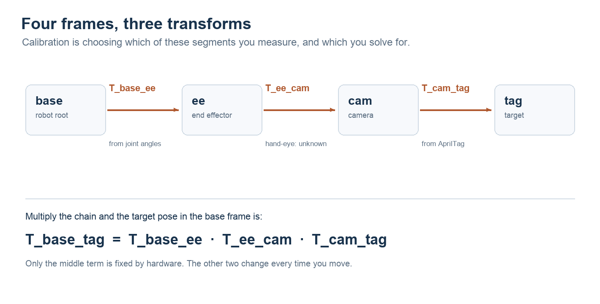

NOTE 16 / 标定 · 系统方法
机器人标定
让像素、坐标系与时间对应起来。一次可复用的标定，应交付参数、适用条件，以及独立验证的证据。
相机能检测到标签，不代表机器人已经知道物体在哪里；重投影误差很小，也不代表机械臂能够准确到达。中间隔着成像模型、坐标变换、运动学和时间对齐。标定要逐段建立这些关系，再用独立数据检查整条链路。
阅读范围。本文围绕相机与机器人定位，覆盖内参、安装外参、手眼和时间。示例用于解释方法，不代表某台机器的实测精度。尚无验收阈值时，先建立基线，报告误差分布和未验证项，不提前宣布“精度合格”。
1. 先看清：像素怎样变成机器人坐标
内参回答“这一个像素对应哪条空间射线”，外参回答“这条射线所在的相机，相对机器人在哪里”。单个像素通常只有方向，没有深度；已知尺寸的标定板、双目或深度传感器提供额外约束，才可能恢复三维位置。
| 任务 | 求解结果 | 需要的观测 |
|---|---|---|
| 内参 | K 与畸变参数 D | 同一成像配置下，标定板的多视角图像 |
| 安装外参 | 两个坐标系间的旋转 R、平移 t | 已知几何或位姿关系 |
| 手眼标定 | 固定安装变换，例如相机相对末端 | 机器人运动与相机观测的对应关系 |
| 时间标定 | 时间偏移，必要时还有时钟漂移 | 采集时间语义、同步机制与有激励的运动数据 |
手眼是求安装外参的一类方法，不是与外参互斥的另一种参数。时间则决定相乘的各段变换是否来自同一时刻。

约定 T_A_B 把 B 系中的坐标变到 A 系：p_A = T_A_B · p_B。那么：
第一段来自关节状态与正运动学，第二段是刚性安装下待标定的常量，第三段来自视觉。固定标定板、移动机械臂时，两端随运动变化，乘积应保持不变。写代码前先用一个已知点检查方向，比凭矩阵数值猜对错可靠。
2. 内参：建立像素与光线的关系
常用零斜切针孔模型的 K 包含 fx、fy、cx、cy，分别是以像素计的焦距和主点坐标。D 描述畸变，其项数和含义取决于模型；普通镜头和鱼眼不能只靠“换一串系数”通用。OpenCV 的投影模型与参数定义可作为实现时的对照。
平面板为什么能标定？同一块板从不同方向拍摄，会产生不同的透视变形；所有图像共用一组 K、D，每张图有各自的板位姿。求解让这些已知角点经过模型投影后，尽量贴近实际检测位置。张正友的方法利用多视角平面约束初始化，再进行非线性优化。相机或板都可以移动，关键是视角变化充分、曝光期间图像清晰。
采集要覆盖位置、距离和倾角。让角点分布到画面中心、四边和四角，兼顾不同距离与朝向；不要求每张板都塞满画面，也不要只在中央重复拍。大倾角会缩小有效角点间距，应在清晰可检测的范围内取舍。
标定对象是一套成像配置。记录分辨率、裁剪、缩放、焦距、对焦状态，以及图像是否经过畸变校正。原始图和校正图必须使用各自匹配的参数，不能对校正图再次套用原始畸变。更改裁剪或缩放后，K 也要相应变换。
板尺寸错误如何影响结果？如果理想平面板的所有尺寸统一乘一个比例，像素内参理论上可以保持不变，而估计的平移尺度会随之改变。因此“小重投影误差”发现不了这种尺度错误。板面翘曲、横纵缩放不一致则可能进一步污染内参。实测尺寸与平整度必须记录。
全局 RMS 之外，还要看逐帧、分区和留出图像的误差。某个角落误差偏大，先检查覆盖、反光、模糊、板面与模型适配，再考虑增加参数；更多畸变项也可能过拟合。
3. 外参：固定的是哪两个坐标系
外参必须连同参考系一起说。PnP 在内参和板上三维点已知时，估计的是板到相机的位姿；它不会自动给出相机到机器人基座的变换。后者还需要板相对基座的已知关系，或机器人运动提供的手眼约束。
相机装在会动的头部时，应把链路拆开：
T_head_cam 是安装外参，T_base_head(t) 随头部及上游关节变化。把某一姿态下相机相对基座的位姿数值当作全局常量，转头后就会失效。腕部相机同理。
配置中至少明确：源/目标坐标系、米或毫米、旋转表达方式、四元数顺序、光学轴约定。安装外参还可能吸收部分关节零位或结构模型误差；若残差随关节姿态系统性变化，应检查运动学，不能只反复重算同一个刚体矩阵。
4. 选板：棋盘格、AprilTag 与 ChArUco
| 板型 | 特性 | 必须确认 |
|---|---|---|
| 棋盘格 | 角点密集；需要正确建立角点顺序 | 内角点行列数、格长、板面平整度 |
| AprilTag 板 | 编码标签提供 ID；多个标签扩大几何覆盖 | family、ID、黑色外边框尺寸、标签间布局 |
| ChArUco 板 | 棋盘格结合 ArUco 编码，利用可识别角点做标定 | 字典、格子行列数、格长、marker 长度、ID 布局 |
ChArUco 不是 AprilTag 的别名。板上的编码用于确定对应关系，实际求解必须使用与印刷板完全一致的几何定义。OpenCV 的 ChArUco 标定教程展示了如何利用多视角和部分可见角点；“允许部分可见”不等于剩几个点就一定有足够约束。
两类采集要分清：内参采集允许移动板；采用“板固定在基座环境中”的手眼模型时，一组手眼数据内板必须固定，相机随机器人运动。换了板的位置，就需要重新分组或显式建模。
单个小标签在远距离、接近正对相机时，倾斜造成的透视变化很弱，可能出现两个重投影接近的候选位姿。多标签扩大板面覆盖有助于稳定估计，但共面板仍需检查视角和像素尺寸。不要仅凭解码成功就认为姿态可信。
尺度可以用近似关系理解：Z ≈ fL / w。已知长度 L 偏大 1%，在其他条件相同的理想模型下，距离估计也约偏大 1%；但实际误差还包括角点噪声、内参误差和姿态。包装标称值不能代替测量记录。
5. 手眼：从运动中解出固定关系
以腕部相机、静止板为例，令 G_i = T_base_ee,i，C_i = T_cam_board,i，待求 X = T_ee_cam，板的基座位姿为固定的 Y：
A = G_i⁻¹ G_j，B = C_i C_j⁻¹ → AX = XB
这是同一块板在不同姿态下的闭环约束。若接口要求 camera→target 而数据提供 target→camera，就要取逆；不能只照抄矩阵乘法。OpenCV calibrateHandEye 的输入输出定义明确了这些方向。
有的算法先旋转后平移，有的联合求解。无论用哪一种，重复拍同一个姿态都不能补齐缺少的运动方向。下面用旋转向量配准的局部线性化，观察几何激励：每个向量 a 对旋转扰动贡献 ‖a‖²I − aaᵀ。绕向量自身转动不会改变它，因此单轴留下一维盲区；两个不平行的轴可以补齐这部分约束。
旋转轴铺得开不开
每条箭头是一组相对运动的旋转向量 a。这里计算 H = Σ(‖a‖²I − aaᵀ)，演示旋转向量配准的局部约束。它不是完整手眼系统的精度证明；阈值仅用于教学提示。
- 最弱 / 最强方向
- —
- 最弱信息量（rad²）
- —
- 条件数
- —
—
同轴旋转：单看旋转方程，绕共同轴的转角无法确定；平移方程也无法约束沿共同轴的安装平移。完整系统还要结合平移观测分析，不能用一个轴散布指标替代六自由度可观性检查。
只有平移：旋转子方程不提供信息，但多方向平移对应仍可能约束 X 的旋转；X 的平移在纯平移运动中不可观。笼统地说“只有平移就完全求不出旋转”并不准确。
角度很小：即使条件数不变，总信息量也会减小，测量噪声更容易主导结果。因此实验同时显示最弱信息量与条件数。这里没有真实传感器噪声模型，不能据此输出毫米级精度或生产合格结论。
实践中先规划覆盖多个非平行转轴的可达姿态，确保板可见、运动完成后再采集稳定图像与对应关节状态。采多少组由覆盖和残差收敛决定，不把固定张数当成成功保证；头部自由度受限时，还需检查当前机构实际能激励哪些方向。
6. 时间：让坐标链对应同一瞬间
空间关系正确，时间配错，仍然会定位错误。需要区分曝光时刻、传感器打戳时刻和主机收到数据的时刻；网络传输延迟不等于曝光时间偏差。关节状态必须在图像对应的采集时刻对齐，必要时插值。
一个时间戳偏差值多少毫米
目标做圆周运动，误差等于 2r·|sin(ωΔt/2)|（ω 用 rad/s，Δt 用秒）。曲线画的是误差随偏差的变化，橙点是当前取值的落点。
- 定位误差
- —
- 等效转角
- —
—
例如半径 0.4 m、角速度 180°/s，10 ms 偏移对应约 12.6 mm 弦长。这是圆周运动的几何示例，不是任意机器人都满足的误差模型；小偏移时可近似为速度乘时间偏差。
PTP 等机制同步时钟，相机触发线控制采集事件，PPS 提供周期时间基准，它们可以互补，不能简单排出一条适用于所有设备的优劣顺序。即使时钟同步，仍需核对曝光延迟、时间戳语义和滚动快门。
软件估计时间偏移需要有辨识度的运动变化；长时间静止或单一匀速运动可能无法区分时间与空间误差。Kalibr提供相机与 IMU 的时空联合标定实现，可用于理解这类问题，但不能直接替代机器人关节链的建模。
7. 从准备到发布：一轮标定怎么做
下面以工作距离 2 m 内的头部相机为例。距离范围只是任务边界，具体最近距离还受对焦、板尺寸和视场限制；先确认远端仍能稳定检测，再确定采样位置。
| 阶段 | 动作与产物 | 进入下一步前检查 |
|---|---|---|
| 0 定义任务 | 列出相机、参考系、工作范围与误差目标 | 无目标时明确标记为基线评估 |
| 1 准备与快照 | 核对板尺寸、图像模式、时间戳；保存原参数和版本 | 板定义匹配、图像清晰、链路数据有效 |
| 2 原参数基线 | 静止采集，记录检测率、位姿散布、逐帧重投影误差 | 区分检测失败、位姿跳变与时间错配 |
| 3 内参采集 | 覆盖画面各区、多距离、多倾角；留出验证图像 | 清晰度、角点覆盖与姿态多样性足够 |
| 4 内参求解 | 输出候选 K、D、逐帧与分区残差 | 留出数据无明显退化，模型与图像模式一致 |
| 5 安装外参 | 固定板，记录同步图像与机器人姿态；求解安装变换 | 坐标方向正确、运动不退化、闭环残差可解释 |
| 6 独立验证 | 新位置、新姿态及独立测量；对比原参数和候选参数 | 分别评估重复性、绝对精度和动态误差 |
| 7 审核与发布 | 归档报告、参数和数据索引；部署后验证加载值 | 达到约定阈值，备份与回滚路径可用 |
采集内参与手眼数据可以分阶段进行；时间基础检查应从准备阶段开始，动态时间评估与外参求解可能需要迭代。候选参数先离线评估，再发布到运行链路，避免边测边换导致基线不可比。
面板应该显示什么？当前阶段、缺少的前置条件、有效样本数、画面覆盖、检测角点叠加、拒绝采样原因、时间对齐偏差、残差分布，以及原参数/候选参数版本。把“已采集”“已求解”“独立验证通过”“已部署”分开显示，不能用一个绿色灯代替所有状态。
自主化可以负责姿态规划、稳定等待、采样质检和求解。实体板尺寸确认、场地布置与设备占用仍需落实；机器人运动还要有独立的限位、碰撞检查和停止能力。浏览器里的教学交互不会连接真机。
8. 验收：低残差、稳定与准确是三件事
| 指标 | 回答的问题 | 不能单独证明 |
|---|---|---|
| 重投影误差 / px | 模型投影和检测点是否一致 | 物理尺度、基座坐标是否正确 |
| 重复性 / mm、° | 同一静止目标多次估计是否稳定 | 是否始终偏向同一方向 |
| 独立绝对误差 / mm、° | 估计与独立参考值差多少 | 未覆盖距离、姿态与环境下的性能 |
相机内参标定通常同时估计每张图的板位姿，小残差首先说明图像模型自洽。它没有直接验证相机相对基座的安装关系；而板尺寸整体错一个比例，重投影甚至可以基本不变。加入机器人约束后也需要独立验收，不能用参与拟合的同一批点自证准确。
留出验证：保留未参与拟合的采集批次、姿态和距离。尽量避免从同一段几乎不变的视频随机拆帧，那样训练与验证信息过于相似。对原参数和新参数使用同一份留出数据。
独立参考：通过量具、测量工装或外部测量系统获得板上点在参考系中的坐标，并记录参考本身的不确定度。固定目标的多姿态闭环能检查一致性，但若没有独立真值，仍不能宣布绝对精度合格。
报告分布：位置误差分别给 XYZ 偏差与三维范数，姿态用相对旋转角，汇总中位数、P95、最大值、有效样本数及检测失败率；再按距离、画面区域和姿态分组。拟合协方差或重采样可描述部分统计不确定度，但不会自动覆盖板尺寸、机械挠曲等系统偏差。
如果静止稳定、运动时偏差变大，时间错配是重点排查项，也要检查运动模糊、滚动快门、关节插值、结构挠曲和旧帧复用。用不同速度、正反方向和稳定停留作对照，才能缩小原因，不能只凭两段视频的差值下结论。
9. 扩展到多传感器与自动驾驶
底层仍然是同一件事：明确各传感器的几何关系、时间关系及其有效范围。变化的是传感器种类、场景尺度与可用约束，而不是换了一套坐标变换原理。
车体、IMU 或后轴中心都可被选作参考系，但必须把定义写清楚。相机与激光雷达可以利用共同目标、场景几何或运动一致性建立约束；具体方法取决于视场重叠和运动条件。多相机联合优化还要检查各条变换链是否闭合。
在役阶段需要监测参数是否仍然适用。在线自标定是一种选择，不能把“必须持续更新参数”当作通则；激励不足、天气恶劣或观测退化时，应抑制更新并保留可信版本。以 20 m/s 为例，1 ms 对应 2 cm 的位移，10 ms 对应 20 cm，这也解释了为什么采集时间不能用消息到达时间随意代替。
10. 最后交付的，应是一份可复现结果
一轮标定结束，除了参数，还应留下足够的信息，让另一个人知道它怎么得到、在哪些条件下成立，以及怎样回退。
- 配置：相机与图像模式、K/D 模型、安装变换及方向、时间偏移定义；双目任务还需左右目相对位姿与校正配置。
- 数据：板定义与实测尺寸、原始图像、采集时间、对应机器人状态、有效样本和剔除原因。
- 求解：代码与依赖版本、求解选项、原参数和候选参数、可复现命令。
- 结论：拟合残差、留出验证、独立精度、适用距离与姿态范围、尚未验证项。
- 部署：参数版本与校验值、加载确认、上线后复测、可恢复的上一版。
没有独立真值时也可以推进。先证明链路正确、观测可重复、采样有覆盖，把现有结果作为基线；等工装与测量条件齐备，再补上绝对精度验收。让结论与证据匹配，比提前写一个漂亮的精度数字更有用。
相关笔记：手眼标定：把「相机看到的」搬进机器人坐标系（AX=XB 的推导） · AprilTag 视觉定位详解（标签怎么变成位姿） · 把 VLA 装进 G2（一个真实的排障记录）